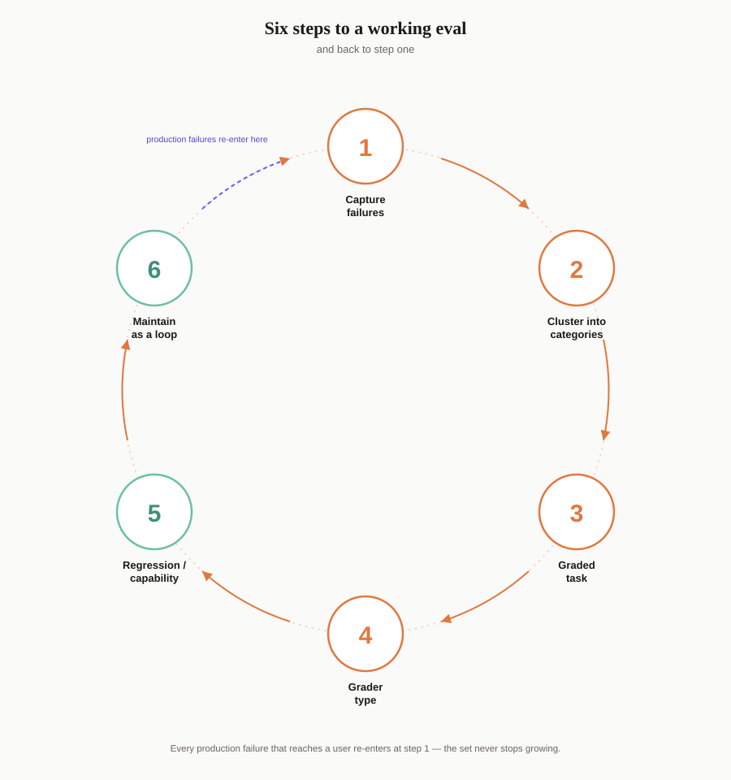

Take an example: a B2B company migrating product search from Solr to a newer, ML-driven platform, with a vendor waiting on requirements. In 2026, what I'd hand them isn't a PRD — it's a set of graded evals, built the same way you'd build them for any AI feature: capture real failures, cluster them, turn each cluster into a testable task, grade it, split it into what must never break versus what's still improving, and keep the whole thing running as a loop instead of a document that goes stale the day it's signed off.
A PRD says what the system should do. It rarely says how you'd know, precisely, whether it actually does — that part gets left to a demo, a gut check, and whoever signs off on UAT. Here's the process that writes that missing part down, end to end, plus one place it would catch something a demo never could.
Step 1: Capture failures before you write a single eval
Don't start by writing evals. Start by capturing what's actually going wrong, in plain language, from real system output. Example: the system says an item is in stock but doesn't say how long it will take to ship — technically correct, practically useless to the person asking.
Step 2: Cluster the failures into categories
Group your raw notes into recurring patterns — five or six, not fifty. For a shopping assistant, that might look like: incomplete-but-technically-correct answers (stock without a restock date), stale or wrong data (cached inventory), preference mismatch (wrong size, gender, or style), unsafe tool sequencing (refund issued before identity is verified), hallucinated policy (inventing a return window that doesn't exist), and scope creep (the agent tries to place an order when it should only be informing).
Step 3: Turn each category into a graded task
For each failure pattern, write a task: a specific input plus explicit pass/fail criteria. The gut-check Anthropic's engineering team uses here is the right one — if you, a human, couldn't clearly call pass or fail on this task, it isn't ready to be an eval yet.
Step 4: Pick the grader type per task
- Code-based (cheap, deterministic): does the response contain the SKU-matched stock number? Did the tool call sequence include an identity-verification step before the refund? Most of what you can automate in ecommerce falls here, because a lot of the ground truth — inventory, price, order status — is structured data you can check exactly.
- LLM-as-judge (subjective quality): does the recommendation match the stated style or size preference? Is the tone appropriately apologetic in a complaint-handling flow? Use a short rubric prompt here, not a vague "rate 1–5 for quality."
- Human (spot-check only): brand voice, edge-case judgment calls, anything with legal or compliance weight — like promising a refund policy that doesn't actually exist.
Step 5: Split into regression and capability evals
Regression evals are the failures you've already fixed and can't afford to reintroduce — the stock-without-restock-date case, the refund-before-verification case. These should sit near 100% and gate every release; a drop here is a blocking bug, not a metric to watch.
Capability evals are the failures you haven't solved yet — ambiguous style or preference matching, long-tail requests the system still gets wrong more often than not. Track these for improvement over time rather than expecting a high pass rate on day one.
Step 6: Maintain it as a loop, not a one-time doc
Every production failure that reaches a real user becomes a new eval case. This is what "evals are the new PRDs" actually means in practice: instead of a static requirements doc asserting "the assistant should handle stock questions well," the eval set itself becomes the executable, versioned definition of what "well" means — and it keeps being checked, not just signed off once.

Where this would hold up somewhere that doesn't look like an AI feature at all
The same six steps apply to something further from a chatbot: the search migration from the top. Picture a catalog that's entirely part-number driven — professional buyers type or paste SKUs like SJSH9-000-3K directly into search. On the old platform, that hyphen is just a tokenizer delimiter. On the new one, a leading - in a search token is a query operator — it means exclude. A part-number search can silently become a filtered-out search, with no error surfaced to anyone.
Step 1 said don't start with evals, start with real failure capture — this is exactly why that step matters here. A clean, single-word demo query would never hit this bug. It only shows up against real, messy, hyphenated production input, which is the actual argument for testing against pulled logs instead of hypothetical cases written from memory. And it's a clean instance of Step 5: this would become a permanent regression case, not a capability one — there's no acceptable pass rate below 100% for a query that used to work and would now silently fail.
It also raises a decision the six steps don't cover on their own: a regression eval doesn't only protect old behavior, sometimes it has to protect a rule that must never be learned away. On the new platform's ML-driven ranking layer, in-stock items would need to outrank out-of-stock ones, and an exact part-number match would need to return that exact part at position one, always, regardless of click history. Those would have to be written as hard guardrails sitting outside the model — a system optimizing on clicks will otherwise happily learn the wrong lesson from a spike of interest in something that's backordered. Deciding where that boundary goes, what's allowed to adapt and what has to stay predictable no matter what the data says, is a product call, not an engineering default.
Six steps, one domain most people wouldn't think to apply them to. That's the part the old requirements doc never wrote down: not what the system should do, but the graded, re-runnable proof that it still does it, for anything a system does that isn't fully deterministic by design.